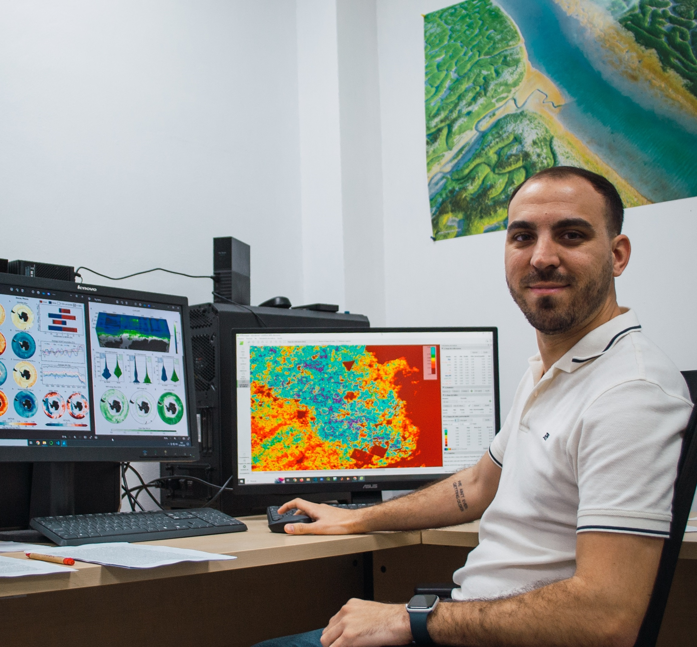
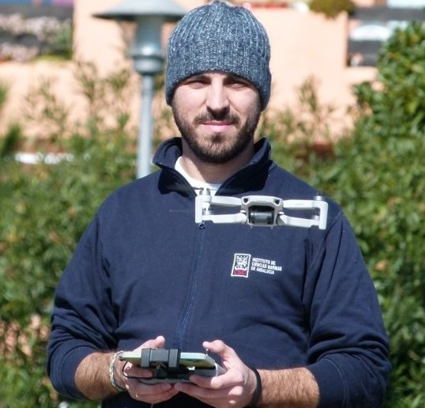
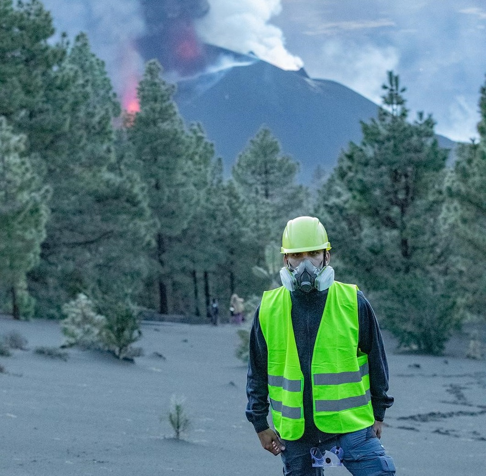
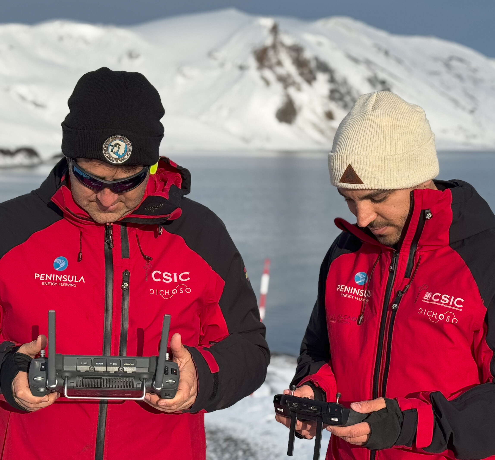
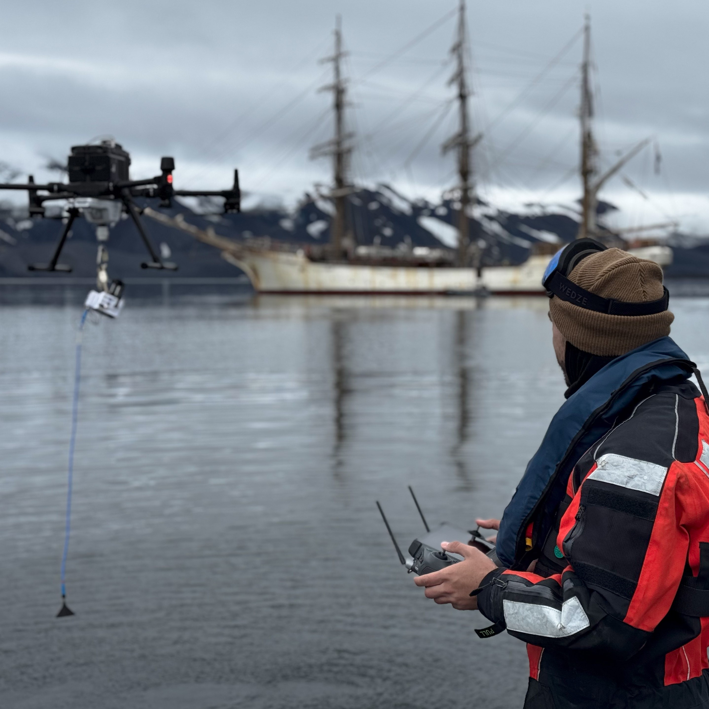
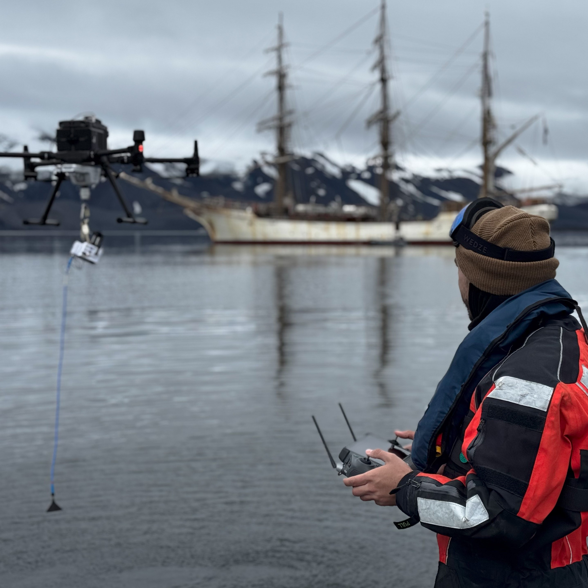
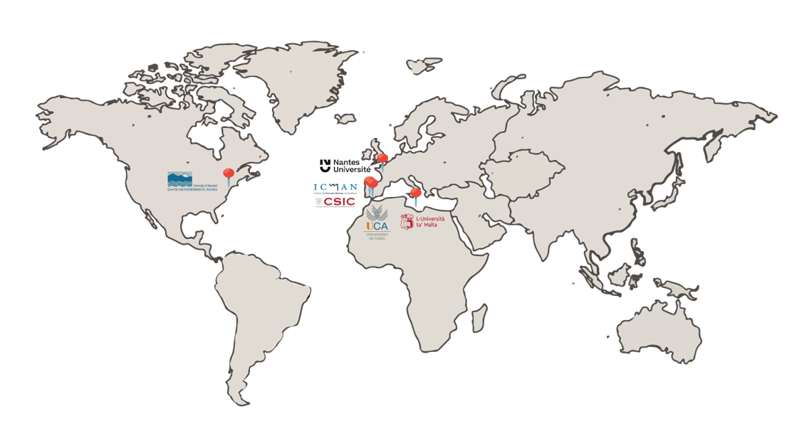

Hey, I’m happy you are here
Thanks for stopping by!
I am a post-doctoral researcher at the Institute of Marine Sciences of Andalusia (ICMAN-CSIC) in the DIGIDRON project under the Momentum CSIC Programme: Develop Your Digital Talent (MMT24-ICMAN-01). My research interests include the application of remote sensing tools (e.g. drone and satellite imagery), combined with emerging technologies for digitization and data processing, to address coastal environmental phenomena, with an emphasis on coastal systems and polar regions.
I am currently working on several research projects, focusing on polar research in penguin colonies on Deception and Livingston Islands (South Shetland Islands), as well as on the development and optimization of deep learning techniques to study the spatial distribution and phenology of some of the most vulnerable ecological communities found in coastal ecosystems, such as seagrass meadows and microphytobenthic mudflats.
  
My background
Prior to joining ICMAN-CSIC, I completed a Bachelor’s degree in Marine Sciences and a Master’s degree in Oceanography at the University of Cádiz (UCA, Spain). In 2017, during the third year of my Bachelor’s program in Marine Sciences at UCA, I began collaborating on scientific research with Dr. Laura del Río in the Department of Earth Sciences. Later, I received a Collaboration Scholarship to fund my Master’s thesis project under the supervision of Professor Dr. Luis Barbero. For this project, I used drone technology with thermal sensors to detect submarine groundwater discharges in coastal areas.
In 2020, I began my scientific career at the Institute of Marine Sciences of Andalusia (ICMAN-CSIC, Spain), where I pursued a PhD focused on developing remote sensing tools and using sensors onboard drones to study coastal environmental processes. Funded by the PhD Fellowship for University Staff Training (FPU, ref: FPU19/04557), I worked under Dr. Antonio Tovar-Sánchez and Dr. Gabriel Navarro. During this time, I specialized in researching various marine ecosystems and characterizing diverse coastal environmental processes, such as seagrass meadows, penguin colonies, and algal blooms. As a result, I participated in six research projects, including two polar projects (PiMetAn and DICHOSO), and published 17 peer-reviewed articles, ten of which I was the first author, in leading journals in the fields of Remote Sensing, Oceanography, and Multidisciplinary Sciences. I completed my PhD in July 2024, graduating with the highest honors, summa cum laude.
I also shared my work with a broader audience at national and international conferences and expanded my training through three research stays abroad. From February to June 2022, at the University of Malta, under the supervision of Dr. Adam Gauci, I enhanced my Python programming skills specifically for drone operations over aquatic surfaces. Later, from October to November 2022, I was at the University of Nantes, working with Dr. Laurent Barillé on multispectral monitoring of oyster farming areas and the study of microphytobenthos in estuarine systems. Finally, from September 2023 to February 2024, I developed Python techniques to improve marine optics algorithms for water quality studies using multispectral drone sensors at the University of Maryland. This research stay was funded by a Fulbright scholarship and supervised by Dr. Greg Silsbe.
More recently, at the beginning of 2025, I had the privilege of participating in my first Antarctic campaign thanks to the DICHOSO project. I embarked on the research vessel BIO Hespérides to cross the Drake Passage from Ushuaia (Argentina) until we arrived on January 9th at the Spanish Antarctic Base Gabriel de Castilla on Deception Island (South Shetland Islands, Maritime Antarctica). Once there, we assessed the role of the island’s volcanic nature and the chinstrap penguin colonies in greenhouse gas emissions, either directly into the atmosphere or through the Southern Ocean. Then, on February 9th, we left the base to begin the campaign aboard the research vessel B/O Sarmiento de Gamboa between Deception and Livingston Islands, working with oceanographic instruments to collect water samples from both surface and deeper layers. Finally, after crossing the Drake Passage once again, we disembarked on February 24th in Punta Arenas (Chile), bringing to a close one of the most enriching and fascinating experiences of my professional career and my life. Now, I am preparing to embark on a new oceanographic campaign in the Atlantic Ocean, thanks to the ESA Advanced Ocean Synergy Training Course, in which I will participate between April and June 2025.
  

Map of my research activity

• University of Cádiz (UCA): From September 2016 to July 2019, BSc and MSc studies.
• Institute of Marine Sciences of Andalusia (ICMAN-CSIC): From October 2020 to July 2024, PhD host institution.
• University of Malta (UM): From February 2022 to June 2022, PhD stay.
• Nantes University (NU): From October 2022 to November 2022, PhD stay.
• University of Maryland Center for Environmental Sciences (UMCES): From August 2023 to February 2024, PhD stay.
• Institute of Marine Sciences of Andalusia (ICMAN-CSIC): From August 2024 to nowadays, Postdoctoral research host institution.